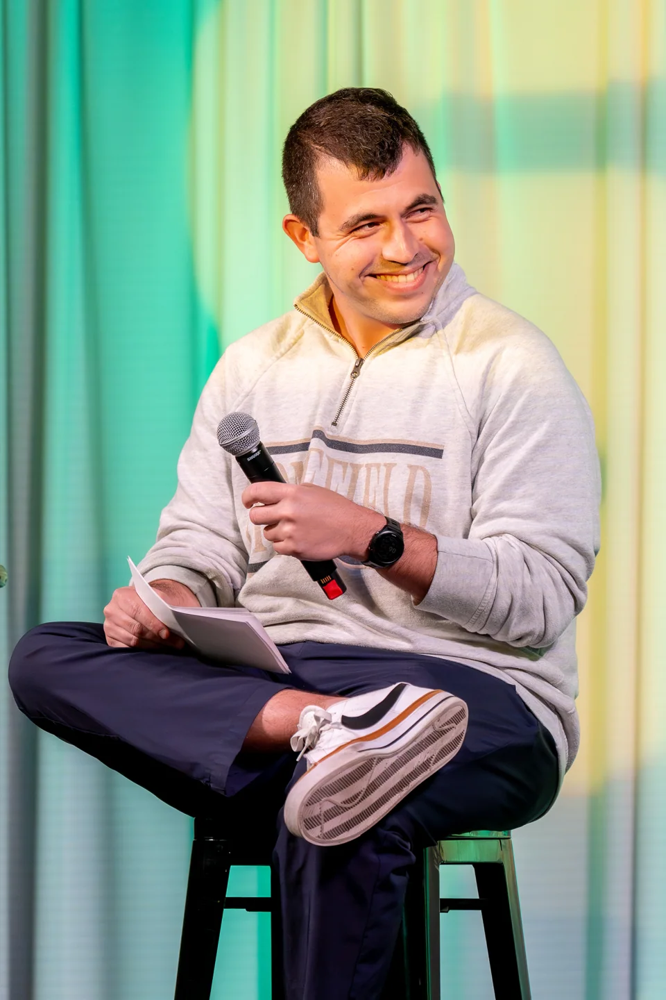
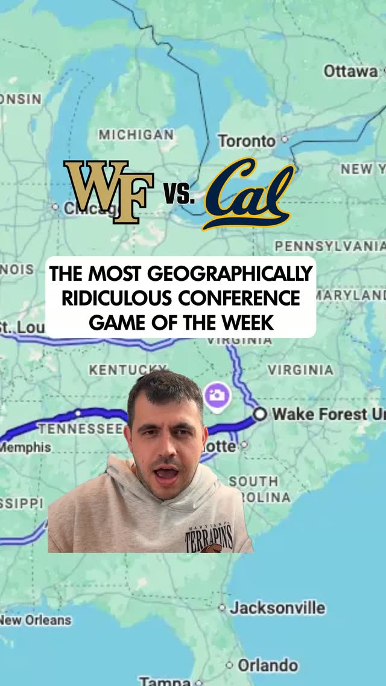
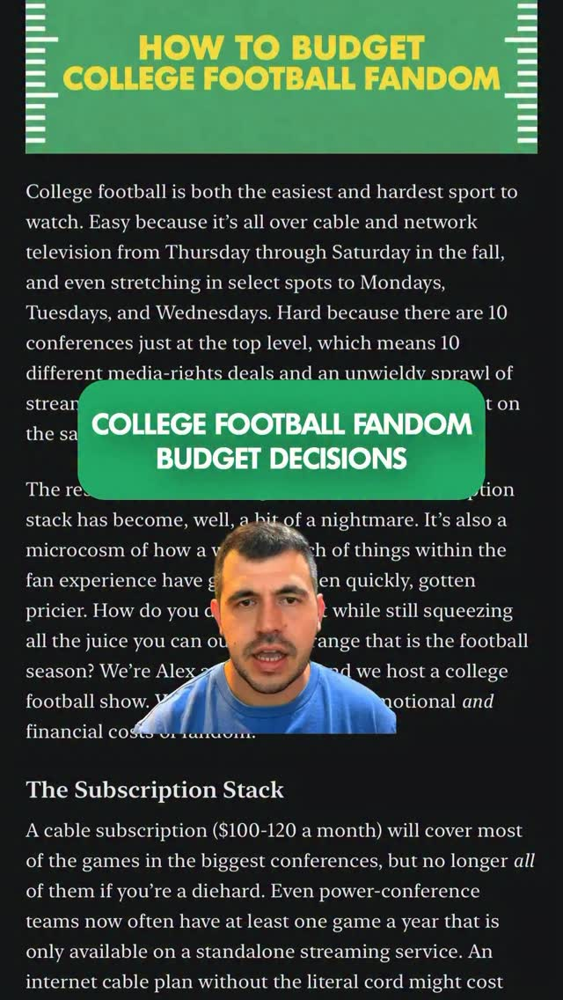
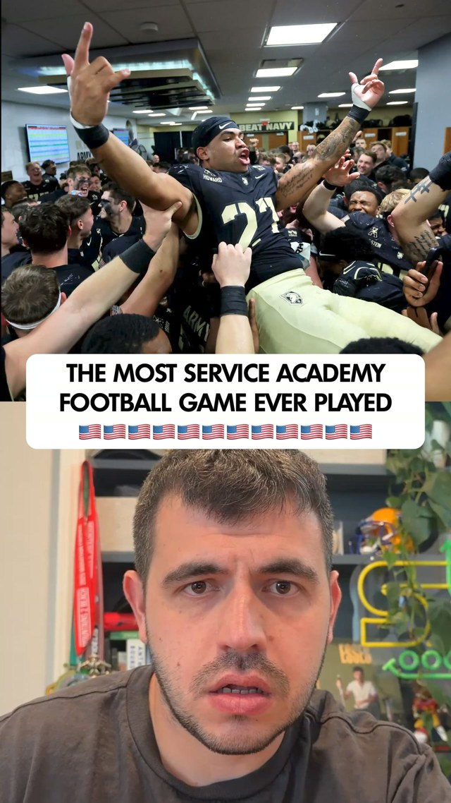

Independent writer · Podcast host · Video creator
Los Angeles, CAAlex Kirshner
Writing and making social content about everything from sports to "not sports."
Hi! I'm a podcast host, freelance writer, and social video person. Split Zone Duo is about the very strange world of college football, while my writing and videos are about whatever I (or my editor) find compelling on any given day. The key thing is that it has to be interesting!

I make a lot of Instagram Reels and TikToks, usually about college football. My idea of what constitutes being "about college football" is pretty broad, however.

InstagramAn Atlantic Coast road trip
Wake Forest at Cal. Naturally.
Watch the video
InstagramChase × Split Zone Duo · Paid partnership
How to budget college football fandom.
Watch the partnership
InstagramAPPRECIATING THE SPORT'S ODDITY
The wildest stat line in CFB history
Watch the video02
Commission a story Selected writing
03
In your headphones
Co-founder & co-host
Split Zone Duo
Est. 2020. Along with my co-host Richard Johnson, I host a national college football podcast with thousands of paying subscribers and an audience that is very good to us. We'd love to work with you or just have you listen to an episode.